A Primer on Private Statistics – Part II
By Gautam Kamath and Jonathan Ullman
The second part of our brief survey of differentially private statistics. This time, we show how to privately estimate the CDF of a distribution (i.e., estimate the distribution in Kolmogorov distance), and conclude with pointers to some other work in the space.
The first part of this series is here, and you can download both parts in PDF form here.
1. CDF Estimation for Discrete, Univariate Distributions
Suppose we have a distribution  over the ordered, discrete domain
over the ordered, discrete domain
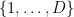
and let be the family of all such distributions. The CDF of the distribution is the function
be the family of all such distributions. The CDF of the distribution is the function 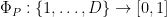
given by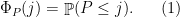
A natural measure of distance between CDFs is the
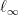
distance, as this is the sort of convergence guarantee that the empirical CDF satisfies. That is, in the non-private setting, the empirical CDF will achieve the minimax rate, which it known by [DKW56, Mas90] to be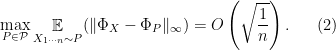
1.1. Private CDF Estimation
Theorem 1 For every
and every
, there exists an
-differentially private mechanism
such that
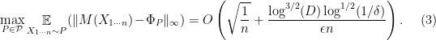
Proof: Assume without loss of generality that
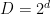
for an integer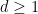
. Let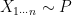
be a sample. By the triangle inequality, we have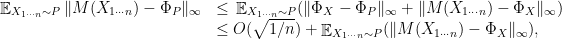
so we will focus on constructing to approximate
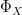
.For any
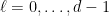
and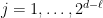
, consider the statistics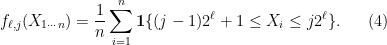
Let
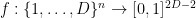
be the function whose output consists of all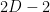
such counts. To decipher this notation, for a given , the counts
, the counts 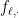
form a histogram of using consecutive bins of width
using consecutive bins of width 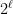
, and we consider the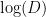
histograms of geometrically increasing width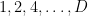
. First, we claim that the function has low sensitivity—for adjacent samples
has low sensitivity—for adjacent samples  and
and  ,
,
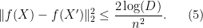
Thus, we can use the Gaussian mechanism:
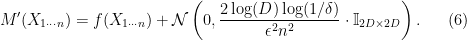
As we will argue, there exists a matrix
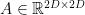
such that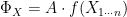
. We will let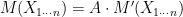
. Since differential privacy is closed under post-processing, inherits the privacy of 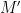
.We will now show how to construct the matrix
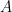
and analyze the error of. For any 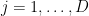
, we can form the interval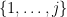
as the union of at most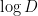
disjoint intervals of the form we’ve computed, and therefore we can obtain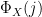
as the sum of at most of the entries of . For example, if
. For example, if 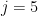
then we can write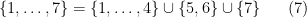
and
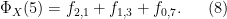
See the following diagram for a visual representation of the decomposition.

This shows hierarchical decomposition of the domain
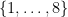
using 14 intervals. The highlighted squares represent the interval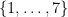
and the highlighted circles show the decomposition of this interval into a union of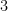
intervals in the tree.Thus we can construct the matrix using this information. Note that each entry of
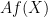
is the sum of at most entries of. Thus, if we use the output of 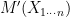
in place of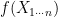
, for every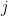
we obtain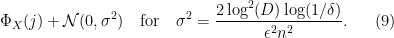
Applying standard bounds on the expected supremum of a Gaussian process, we have
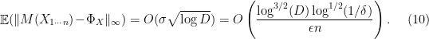

1.2. Why Restrict the Domain?
A drawback of the estimator we constructed is that it only applies to distributions of finite support
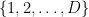
, albeit with a relatively mild dependence on the support size. If privacy isn’t a concern, then no such restriction is necessary, as the bound (2) applies equally well to any distribution over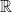
. Can we construct a differentially private estimator for distributions with infinite support?Perhaps surprisingly, the answer to this question is no! Any differentially private estimator for the CDF of the distribution has to have a rate that depends on the support size, and cannot give non-trivial rates for distributions with infinite support.
Theorem 2 ([BNSV15]) If
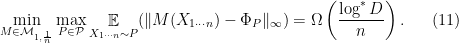
The notation
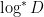
refers to the iterated logarithm.We emphasize that this theorem shouldn’t meet with too much alarm, as grows remarkably slowly with
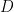
. There are differentially private CDF estimators that achieve very mild dependence on [BNS13, BNSV15], including one nearly matching the lower bound in Theorem 2. Moreover, if we want to estimate a distribution over , and are willing to make some mild regularity conditions on the distribution, then we can approximate it by a distribution with finite support and only increase the rate slightly. However, what Theorem 2 shows is that there is no “one-size-fits-all” solution to private CDF estimation that achieves similar guarantees to the empirical CDF. That is, the right algorithm has to be tailored somewhat to the application and the assumptions we can make about the distribution.2. More Private Statistics
Of course, the story doesn’t end here! There’s a whole wide world of differentially private statistics beyond what we’ve mentioned already. We proceed to survey just a few other directions of study in private statistics.
2.1. Parameter and Distribution Estimation
A number of the early works in differential privacy give methods for differentially private statistical estimation for i.i.d. data. The earliest works [DN03, DN04, BDMN05, DMNS06], which introduced the Gaussian mechanism, among other foundational results, can be thought of as methods for estimating the mean of a distribution over the hypercube
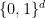
in the norm. Tight lower bounds for this problem follow from the tracing attacks introduced in [BUV14, DSSUV15, BSU17, SU17a, SU17b]. A very recent work of Acharya, Sun, and Zhang [ASZ20] adapts classical tools for proving estimation and testing lower bounds (lemmata of Assouad, Fano, and Le Cam) to the differentially private setting. Steinke and Ullman [SU17b] give tight minimax lower bounds for the weaker guarantee of selecting the largest coordinates of the mean, which were refined by Cai, Wang, and Zhang [CWZ19] to give lower bounds for sparse mean-estimation problems.Nissim, Raskhodnikova, and Smith introduced the highly general sample-and-aggregate paradigm, which they apply to several learning problems (e.g., learning mixtures of Gaussians) [NRS07]. Later, Smith [Smi11] showed that this paradigm can be used to transform any estimator for any asymptotically normal, univariate statistic over a bounded data domain into a differentially private one with the same asymptotic convergence rate.
Subsequent work has focused on both relaxing the assumptions in [Smi11], particularly boundedness, and on giving finite-sample guarantees. Karwa and Vadhan investigated the problem of Gaussian mean estimation, proving the first near-optimal bounds for this setting [KV18]. In particular, exploiting concentration properties of Gaussian data allows us to achieve non-trivial results even with unbounded data, which is impossible in general. Following this, Kamath, Li, Singhal, and Ullman moved to the multivariate setting, investigating the estimation of Gaussians and binary product distributions in total variation distance [KLSU19]. In certain cases (i.e., Gaussians with identity covariance), this is equivalent to mean estimation in  -distance, though not always. For example, for binary product distribution, one must estimate the mean in a type of
-distance, though not always. For example, for binary product distribution, one must estimate the mean in a type of
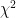
-distance instead. The perspective of distribution estimation rather than parameter estimation can be valuable. Bun, Kamath, Steinke, and Wu [BKSW19] develop a primitive for private hypothesis selection, which they apply to learn any coverable class of distributions under pure differential privacy. Through the lens of distribution estimation, their work implies an upper bound for mean estimation of binary product distributions that bypasses lower bounds for the same problem in the empirical setting. In addition to work on mean estimation in the sub-Gaussian setting, such as the results discussed earlier, mean estimation has also been studied under weaker moment conditions [BS19, KSU20]. Beyond these settings, there has also been study of estimation of discrete multinomials, including estimation in Kolmogorov distance [BNSV15] and in total variation distance for structured distributions [DHS15], and parameter estimation of Markov Random Fields [ZKKW20].A different approach to constructing differentially private estimators is based on robust statistics. This approah begins with the influential work of Dwork and Lei [DL09], which introduced the propose-test-release framework, and applied to estimating robust statistics such as the median and interquartile range. While the definitions in robust statistics and differential privacy are semantically similar, formal connections between the two remain relatively scant, which suggests a productive area for future study.
2.2. Hypothesis Testing
An influential work of Homer et al. [HSRDTMPSNC08] demonstrated the vulnerability of classical statistics in a genomic setting, showing that certain -statistics on many different variables could allow an attacker to determine the presence of an individual in a genome-wide association study (GWAS). Motivated by these concerns, an early line of work from the statistics community focused on addressing these issues [VS09, USF13, YFSU14].
More recently, work on private hypothesis testing can be divided roughly into two lines. The first focuses on the minimax sample complexity, in a line initiated by Cai, Daskalakis, and Kamath [CDK17], who give an algorithm for privately testing goodness-of-fit (more precisely, a statistician might refer to this problem as one-sample testing of multinomial data). A number of subsequent works have essentially settled the complexity of this problem [ASZ18, ADR18], giving tight upper and lower bounds. Other papers in this line study related problems, including the two-sample version of the problem, independence testing, and goodness-of-fit testing for multivariate product distributions [ASZ18, ADR18, ADKR19, CKMUZ19]. A related paper studies the minimax sample complexity of property estimation, rather than testing of discrete distributions, including support size and entropy [AKSZ18]. Other recent works in this vein focus on testing of simple hypotheses [CKMTZ18, CKMSU19]. In particular [CKMSU19] proves an analogue of the Neyman-Pearson Lemma for differentially private testing of simple hypotheses. A paper of Awan and Slavkovic [AS18] gives a universally optimal test when the domain size is two, however Brenner and Nissim [BN14] shows that such universally optimal tests cannot exist when the domain has more than two elements. A related problem in this space is private change-point detection [CKMTZ18, CKMSU19, CKLZ19] — in this setting, we are given a time series of datapoints which are sampled from a distribution, which at some point, changes to a different distribution. The goal is to (privately) determine when this point occurs.
Complementary to minimax hypothesis testing, a line of work [WLK15, GLRV16, KR17, KSF17, CBRG18, SGGRGB19, CKSBG19] designs differentially private versions of popular test statistics for testing goodness-of-fit, closeness, and independence, as well as private ANOVA, focusing on the performance at small sample sizes. Work by Wang et al. [WKLK18] focuses on generating statistical approximating distributions for differentially private statistics, which they apply to hypothesis testing problems.
2.3. Differential Privacy on Graphs
There is a significant amount of work on differentially private analysis of graphs. We remark that these algorithms can satisfy either edge or node differential privacy. The former (easier) guarantee defines a neighboring graph to be one obtained by adding or removing a single edge, while in the latter (harder) setting, a neighboring graph is one that can be obtained by modifying the set of edges connected to a single node. The main challenge in this area is that most graph statistics can have high sensitivity in the worst-case.
The initial works in this area focused on the empirical setting, and goals range from counting subgraphs [KRSY11, BBDS13, KNRS13, CZ13, RS16] to outputting a privatized graph which approximates the original [GRU12, BBDS12, Upa13, AU19, EKKL20]. In contrast to the setting discussed in most of this series, it seems that there are larger qualitative differences between the study of empirical and population statistics due to the fact that many graph statistics have high worst-case sensitivity, but may have smaller sensitivity on typical graphs from many natural models.
In the population statistics setting, recent work has focused on parameter estimation of the underlying random graph model. So far this work has given estimators for the -model [KS16] and graphons [BCS15,BCSZ18]. Graphons are a generalization of the stochastic block model, which is, in turn, a generalization of the Erdös-Rényi model. Interestingly, the methods of Lipschitz-extensions introduced in the empirical setting by [BBDS13, KNRS13] are the main tool used in the statistical setting as well. While the first works on private graphon estimation were not computationally efficient, a recent focus has been on obviating these issues for certain important cases, such as the Erdös-Rényi setting [SU19].
Bibliography
[ADKR19] Maryam Aliakbarpour, Ilias Diakonikolas, Daniel M. Kane, and Ronitt Rubinfeld. Private testing of distributions via sample permutations. NeurIPS ’19.
[ADR18] Maryam Aliakbarpour, Ilias Diakonikolas, and Ronitt Rubinfeld. Differentially private identity and closeness testing of discrete distributions. ICML ’18.
[AKSZ18] Jayadev Acharya, Gautam Kamath, Ziteng Sun, and Huanyu Zhang. Inspectre: Privately estimating the unseen. ICML ’18.
[AS18] Jordan Awan and Aleksandra Slavković. Differentially private uniformly most powerful tests for binomial data. NeurIPS ’18.
[ASZ18] Jayadev Acharya, Ziteng Sun, and Huanyu Zhang. Differentially private testing of identity and closeness of discrete distributions. NeurIPS ’18.
[ASZ20] Jayadev Acharya, Ziteng Sun, and Huanyu Zhang. Differentially private Assouad, Fano, and Le Cam. arXiv, 2004.06830, 2020.
[AU19] Raman Arora and Jalaj Upadhyay. On differentially private graph sparsification and applications. NeurIPS ’19.
[BBDS12] Jeremiah Blocki, Avrim Blum, Anupam Datta, and Or Sheffet. The Johnson-Lindenstrauss transform itself preserves differential privacy. FOCS ’12.
[BBDS13] Jeremiah Blocki, Avrim Blum, Anupam Datta, and Or Sheffet. Differentially private data analysis of social networks via restricted sensitivity. ITCS ’13.
[BCS15] Christian Borgs, Jennifer Chayes, and Adam Smith. Private graphon estimation for sparse graphs. NIPS ’15.
[BCSZ18] Christian Borgs, Jennifer Chayes, Adam Smith, and Ilias Zadik. Revealing network structure, confidentially: Improved rates for node-private graphon estimation. FOCS ’18.
[BDMN05] Avrim Blum, Cynthia Dwork, Frank McSherry, and Kobbi Nissim. Practical privacy: The SuLQ framework. PODS ’05.
[BKSW19] Mark Bun, Gautam Kamath, Thomas Steinke, and Zhiwei Steven Wu. Private hypothesis selection. NeurIPS ’19.
[BN14] Hai Brenner and Kobbi Nissim. Impossibility of differentially private universally optimal mechanisms. SIAM Journal on Computing, 43(5), 2014.
[BNS13] Amos Beimel, Kobbi Nissim, and Uri Stemmer. Private learning and sanitization: Pure vs. approximate differential privacy. APPROX-RANDOM ’13.
[BNSV15] Mark Bun, Kobbi Nissim, Uri Stemmer, and Salil Vadhan. Differentially private release and learning of threshold functions. FOCS ’15.
[BS19] Mark Bun and Thomas Steinke. Average-case averages: Private algorithms for smooth sensitivity and mean estimation. NeurIPS ’19.
[BSU17] Mark Bun, Thomas Steinke, and Jonathan Ullman. Make up your mind: The price of online queries in differential privacy. SODA ’17.
[BUV14] Mark Bun, Jonathan Ullman, and Salil Vadhan. Fingerprinting codes and the price of approximate differential privacy. STOC ’14.
[CBRG18] Zachary Campbell, Andrew Bray, Anna Ritz, and Adam Groce. Differentially private ANOVA testing. ICDIS ’18.
[CDK17] Bryan Cai, Constantinos Daskalakis, and Gautam Kamath. Priv’it: Private and sample efficient identity testing. ICML ’17.
[CKLZ19] Rachel Cummings, Sara Krehbiel, Yuliia Lut, and Wanrong Zhang. Privately detecting changes in unknown distributions. arXiv, 1910.01327, 2019.
[CKMSU19] Clément L. Canonne, Gautam Kamath, Audra McMillan, Adam Smith, and Jonathan Ullman. The structure of optimal private tests for simple hypotheses. STOC ’19.
[CKMTZ18] Rachel Cummings, Sara Krehbiel, Yajun Mei, Rui Tuo, and Wanrong Zhang. Differentially private change-point detection. NeurIPS ’18.
[CKMUZ19] Clément L. Canonne, Gautam Kamath, Audra McMillan, Jonathan Ullman, and Lydia Zakynthinou. Private identity testing for high-dimensional distributions. arXiv, 1905.11947, 2019.
[CKSBG19] Simon Couch, Zeki Kazan, Kaiyan Shi, Andrew Bray, and Adam Groce. Differentially private nonparametric hypothesis testing. CCS ’19.
[CWZ19] T. Tony Cai, Yichen Wang, and Linjun Zhang. The cost of privacy: Optimal rates of convergence for parameter estimation with differential privacy. arXiv, 1902.04495, 2019.
[CZ13] Shixi Chen and Shuigeng Zhou. Recursive mechanism: Towards node differential privacy and unrestricted joins. SIGMOD ’13.
[DHS15] Ilias Diakonikolas, Moritz Hardt, and Ludwig Schmidt. Differentially private learning of structured discrete distributions. NIPS ’15.
[DKW56] Aryeh Dvoretzky, Jack Kiefer, and Jacob Wolfowitz. Asymptotic minimax character of the sample distribution function and of the classical multinomial estimator. The Annals of Mathematical Statistics, 27(3), 1956.
[DL09] Cynthia Dwork and Jing Lei. Differential privacy and robust statistics. STOC ’09.
[DMNS06] Cynthia Dwork, Frank McSherry, Kobbi Nissim, and Adam Smith. Calibrating noise to sensitivity in private data analysis. TCC ’06.
[DN03] Irit Dinur and Kobbi Nissim. Revealing information while preserving privacy. PODS ’03.
[DN04] Cynthia Dwork and Kobbi Nissim. Privacy-preserving datamining on vertically partitioned databases. CRYPTO ’04.
[DSSUV15] Cynthia Dwork, Adam Smith, Thomas Steinke, Jonathan Ullman, and Salil Vadhan. Robust traceability from trace amounts. FOCS ’15.
[EKKL20] Marek Eliáš, Michael Kapralov, Janardhan Kulkarni, and Yin Tat Lee. Differentially private release of synthetic graphs. SODA ’20.
[GLRV16] Marco Gaboardi, Hyun-Woo Lim, Ryan M. Rogers, and Salil P. Vadhan. Differentially private chi-squared hypothesis testing: Goodness of fit and independence testing. ICML ’16.
[GRU12] Anupam Gupta, Aaron Roth, and Jonathan Ullman. Iterative constructions and private data release. TCC ’12.
[HSRDTMPSNC08] Nils Homer, Szabolcs Szelinger, Margot Redman, David Duggan, Waibhav Tembe, Jill Muehling, John V. Pearson, Dietrich A. Stephan, Stanley F. Nelson, and David W. Craig. PLoS Genetics, 4(8), 2008.
[KLSU19] Gautam Kamath, Jerry Li, Vikrant Singhal, and Jonathan Ullman. Privately learning high-dimensional distributions. COLT ’19.
[KNRS13] Shiva Prasad Kasiviswanathan, Kobbi Nissim, Sofya Raskhodnikova, and Adam Smith. Analyzing graphs with node differential privacy. TCC ’13.
[KR17] Daniel Kifer and Ryan M. Rogers. A new class of private chi-square tests. AISTATS ’17.
[KRSY11] Vishesh Karwa, Sofya Raskhodnikova, Adam Smith, and Grigory Yaroslavtsev. Private analysis of graph structure. VLDB ’11.
[KS16] Vishesh Karwa and Aleksandra Slavković. Inference using noisy degrees: Differentially private β-model and synthetic graphs. The Annals of Statistics, 44(1), 2016.
[KSF17] Kazuya Kakizaki, Jun Sakuma, and Kazuto Fukuchi. Differentially private chi-squared test by unit circle mechanism. ICML ’17.
[KSU20] Gautam Kamath, Vikrant Singhal, and Jonathan Ullman. Private mean estimation of heavy-tailed distributions. arXiv, 2002.09464, 2020.
[KV18] Vishesh Karwa and Salil Vadhan. Finite sample differentially private confidence intervals. ITCS ’18.
[Mas90] Pascal Massart. The tight constant in the Dvoretzky-Kiefer-Wolfowitz inequality. The Annals of Probability, 18(3), 1990.
[NRS07] Kobbi Nissim, Sofya Raskhodnikova, and Adam Smith. Smooth sensitivity and sampling in private data analysis. STOC ’07.
[RS16] Sofya Raskhodnikova and Adam D. Smith. Lipschitz extensions for node-private graph statistics and the generalized exponential mechanism. FOCS ’16.
[Smi11] Adam Smith. Privacy-preserving statistical estimation with optimal convergence rates. STOC ’11.
[SGGRGB19] Marika Swanberg, Ira Globus-Harris, Iris Griffith, Anna Ritz, Adam Groce, and Andrew Bray. Improved differentially private analysis of variance. PETS ’19.
[SU17a] Thomas Steinke and Jonathan Ullman. Between pure and approximate differential privacy. Journal of Privacy and Confidentiality, 7(2), 2017.
[SU17b] Thomas Steinke and Jonathan Ullman. Tight lower bounds for differentially private selection. FOCS ’17.
[SU19] Adam Sealfon and Jonathan Ullman. Efficiently estimating Erdos-Renyi graphs with node differential privacy. NeurIPS ’19.
[Upa13] Jalaj Upadhyay. Random projections, graph sparsification, and differential privacy. ASIACRYPT ’13.
[USF13] Caroline Uhler, Aleksandra Slavković, and Stephen E. Fienberg. Privacy-preserving data sharing for genome-wide association studies. The Journal of Privacy and Confidentiality, 5(1), 2013.
[VS09] Duy Vu and Aleksandra Slavković. Differential privacy for clinical trial data: Preliminary evaluations. ICDMW ’09.
[WKLK18] Yue Wang, Daniel Kifer, Jaewoo Lee, and Vishesh Karwa. Statistical approximating distributions under differential privacy. The Journal of Privacy and Confidentiality, 8(1), 2018.
[WLK15] Yue Wang, Jaewoo Lee, and Daniel Kifer. Revisiting differentially private hypothesis tests for categorical data. arXiv, 1511.03376, 2015.
[YFSU14] Fei Yu, Stephen E. Fienberg, Aleksandra B. Slavković, and Caroline Uhler. Scalable privacy-preserving data sharing methodology for genome-wide association studies. Journal of Biomedical Informatics, 50, 2014.
[ZKKW20] Huanyu Zhang, Gautam Kamath, Janardhan Kulkarni, and Zhiwei Steven Wu. Privately learning Markov random fields. arXiv, 2002.09463, 2020.